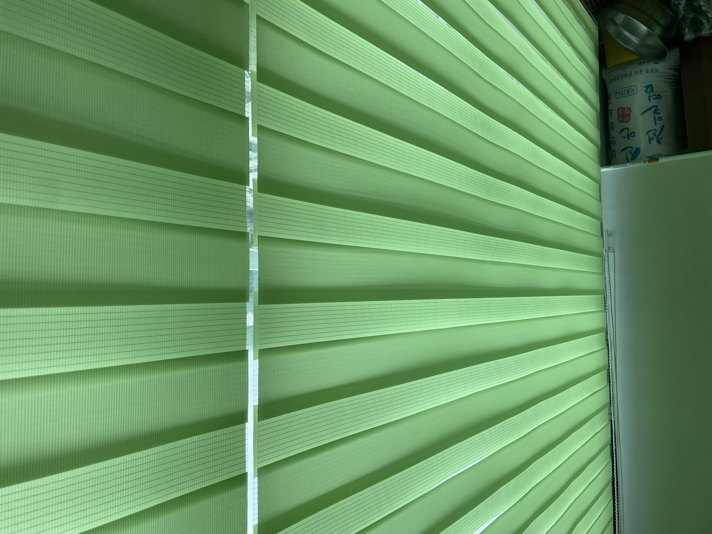
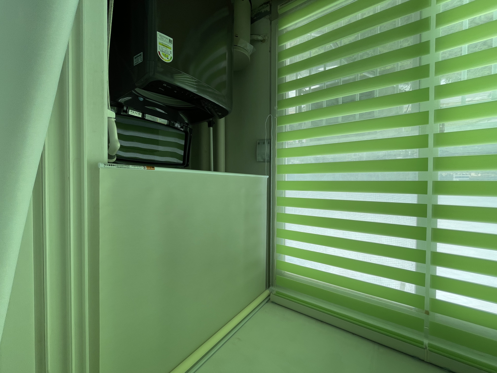
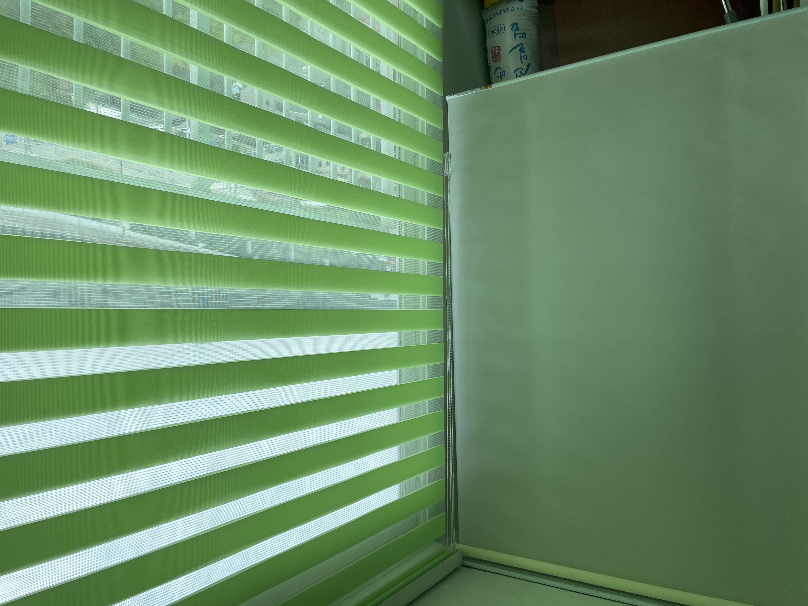

안녕하세요, 드리움 커튼&블라인드입니다. 오늘은 인천 장수주공아파트 베란다 시공을 다녀온 후기예요.

베란다는 창도 있고 세탁기·창고처럼 가려야 할 공간도 함께 있는 곳이라, 한 가지 제품으로만 해결하기보다 자리에 맞게 제품을 나눠서 시공하는 게 훨씬 깔끔하답니다.
창 쪽은 채광, 그린 콤비블라인드

먼저 창문 쪽에는 그린 계열 콤비블라인드를 설치했어요. 채광 조절이 자유로운 콤비블라인드는 베란다 창에 딱이에요. 원단을 어긋나게 하면 은은하게 빛과 바깥 풍경이 들어오고, 겹치면 프라이버시를 지켜줍니다. 밝은 그린 컬러가 베란다 특유의 화사하고 싱그러운 분위기를 살려줘요.
이번 시공 요약
- 위치 · 인천 장수주공아파트
- 공간 · 베란다 (창 + 세탁기·수납)
- 제품 · 그린 콤비블라인드 + 롤스크린
- 포인트 · 자리별 제품 분리 + 타공 퍼티 마감
수납 공간은 가림, 롤스크린

베란다 양쪽으로는 일반 롤스크린을 시공했어요. 이쪽은 채광보다 가림이 목적이에요. 세탁기와 창고처럼 생활감이 드러나는 공간을 롤스크린으로 깔끔하게 가려주면, 베란다 전체가 한결 정돈되어 보입니다.

같은 그린 톤으로 통일감을 주면서도 각 공간의 역할에 맞게 기능이 살아나요. 창은 채광, 수납공간은 가림. 하나하나 목적에 맞춰 시공했습니다. 세탁기 위쪽 롤스크린은 필요할 때만 올려서 쓰면 되니 실용적이에요.
블라인드만 달고 끝이 아니에요
마지막으로, 시공을 마친 뒤 천장에 있던 오래된 타공 구멍은 퍼티로 깔끔하게 메꿔 마감해드렸어요. 블라인드만 달고 끝내는 게 아니라, 눈에 거슬리는 부분까지 함께 정리해드리는 게 드리움의 방식입니다. :)
드리움은 인천·부천을 비롯한 수도권 서남부와 서울·경기 전 지역에서 정밀 실측부터 시공까지 직접 진행합니다. 커튼·블라인드 상담은 편하게 문의 주세요!